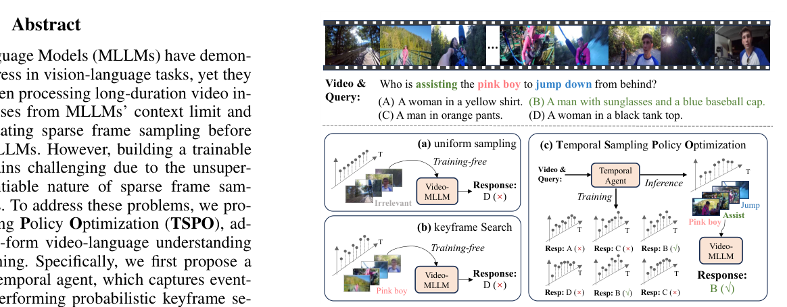
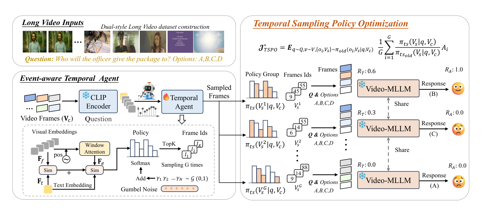
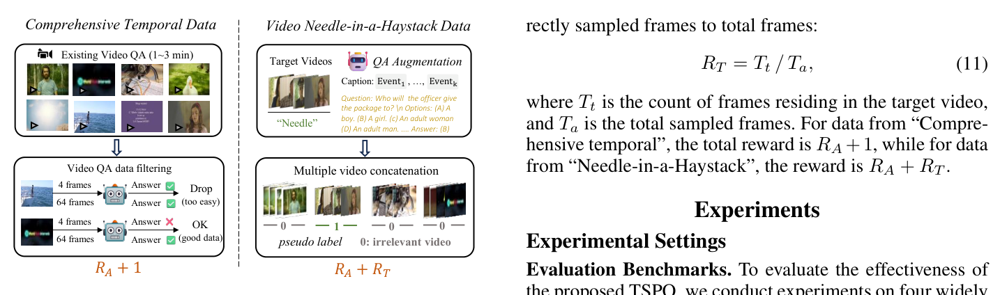

PAPER · 2026
TSPO
Temporal Sampling Policy Optimization for Long-form Video Language Understanding
TSPO 根据问题从候选帧中选择一组关键帧，用冻结 MLLM 的回答奖励训练选帧策略。
- 作者
- Tang、Han、Sun 等；西安交通大学、中国电信 TeleAI、北京科技大学
- 入库
- 2026-09-14
- 原文
- Zotero
五分钟重建
均匀选帧与问题无关，可能漏掉短暂证据。TSPO 训练一个小型 temporal agent，根据问题从候选帧中选出一组帧，再交给冻结的 MLLM 回答。
给候选帧打分
1 FPS 得到候选，冻结 CLIP 提特征。可训练 agent 结合帧级与事件级信息。
探索不同选帧组
Gumbel Top-K 形成不同选择，冻结 MLLM 对每组帧作答。主要更新选帧 agent。
用奖励训练选择
答案奖励 R_A 评价整组选帧；目标片段奖励 R_T 评价选中帧有多少位于标注片段。
具体例子（教学假设）：选 4 帧，其中 3 帧在目标片段，R_T=3/4。它没有把未选中的目标帧算进分母，所以更接近 precision，而不是完整的时间 IoU。
边界：一组帧让 MLLM 答对，不证明每帧都有用。若短事件没有进入 1 FPS 候选，selector 无法重新创造那帧。奖励还依赖冻结 MLLM 能否读懂证据。
先预测，再展开答案
两组帧都答对，一组 4/4 在目标片段，另一组 2/4 在片段。只有 R_A 时能区分这项冗余差吗？
查看机制解释
不能直接区分，两组答案奖励相同。R_T 提供额外的集中程度信号，分别为 1 和 0.5，但它也不是逐帧因果贡献的证明。
关掉提示后解释：为什么论文说端到端优化，却仍可冻结 CLIP 和负责回答的 MLLM？
2026-10-04：讲解与练习待试用，本次未进行理解检验；此处不记录复测通过。
一页看懂
02问题
长视频只能稀疏抽帧，均匀采样可能漏掉 query 真正需要的短片段；但帧级标注缺失，离散选帧又不可直接反传。
方法
Temporal Agent 从 1 FPS 候选中概率化选帧；多组帧分别交给冻结 MLLM，用答案正确率和目标片段定位奖励做组相对策略优化。
结果
LongVideoBench +5.0%、MLVU +6.0%；但偏整体理解的 Video-MME 仅 +1.1%，说明方法更擅长 query-localization。

TSPO 根据问题从候选帧中选择一组关键帧，用冻结 MLLM 的回答奖励训练选帧策略。
关键机制: 选帧策略如何学会
03先把长视频按 1 FPS 变成候选帧，再用冻结 CLIP 和只有约 3.5M 可学习参数的 temporal agent 计算帧级与事件级相似度。
训练时同一问题采样多组帧，组内比较奖励；推理时去掉 Gumbel 噪声做确定性选帧。
Gumbel 噪声负责探索不同的离散帧组合；GRPO 式目标负责根据相对奖励提高更好的选帧方案概率。冻结 MLLM 后，语言策略比率约掉，只更新 temporal sampling policy。

关键机制: 双数据与双奖励
04答案正确率解决「能不能答对」，目标片段内选帧比例解决「是否夹带大量无关帧」。
| 信号 | 含义 | 边界 |
|---|---|---|
| R_A | 回答是否正确 | 组级弱监督，不归因到单帧 |
| R_T | 选中目标片段的帧数 / 总选帧数 | precision-like，不是完整 IoU |

证据与边界
05| 取舍 | 收益 | 代价 |
|---|---|---|
| 冻结 MLLM 与 CLIP | 训练稳定、显存低、奖励归因清楚 | 弱 MLLM 会制造噪声奖励 |
| query-aware 选帧 | 定位问题时少看也能答对 | 候选阶段漏掉的瞬间无法挽回 |
| needle 伪标签 | 获得长程定位信号 | 只提供粗粒度目标片段 |
卡壳点
06Q：答对的那组帧是否就意味着每一帧都真正有用？（2026-09-14 首测）
不意味着。$R_A$ 只说明这组帧整体足以让冻结 MLLM 答对，而且不同帧组合可能都包含了足够证据。组内相对奖励只能偏好「更容易得到正确答案」的采样方案，不能把功劳精确分配到某一帧。needle 数据的 $R_T$ 用目标片段内选帧比例进一步偏好更集中的方案，但它是粗粒度的 precision-like 信号，不是 IoU。
Q：Video-MME 上 TSPO 是否失效？
不是完全失效，而是收益较小。Video-MME 更偏整体视频理解，问题不一定对应一个很窄的关键片段；TSPO 的 query-aware 局部采样优势因此不容易发挥。